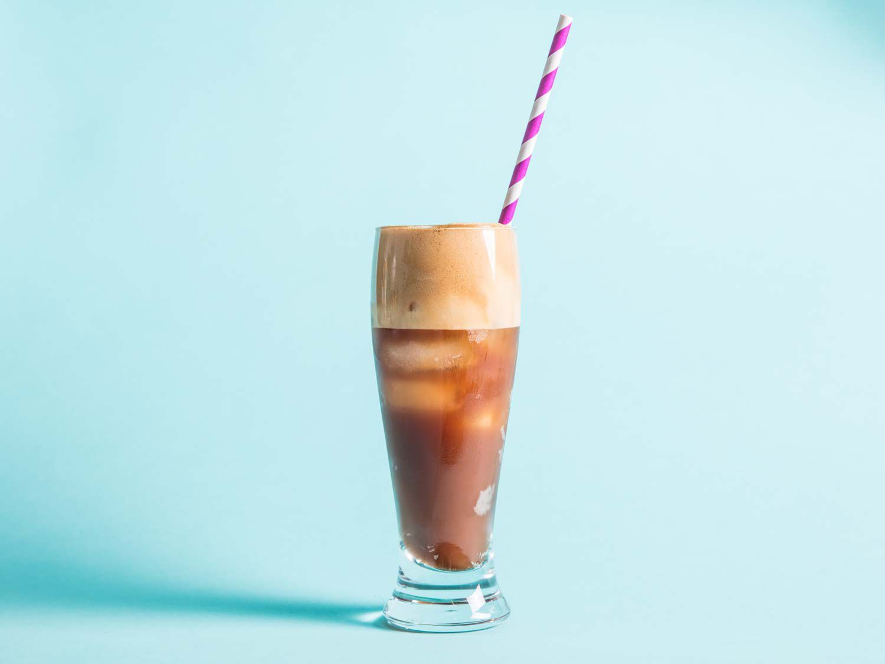

Frothy Cold Coffee

A good beverage to be treated with in the hot summer days. Preparing it is
so easy and fast that you would surely want to try this out now.
Ingredients
- 1 litre (33.814 ounce) of milk
- Grounded coffee powder
-
A chocolate bar, in our case we are going with a KitKat chocolate bar
- A full scoop of vanilla icecream
- Sugar
- Liquid chocolate for garnishing
- Few ice-cubes
Steps
-
Take a small bowl and add small amount of boiling water to it. Then add
2 tablespoon of sugar (add more or less according to your preference)
and stir it till the sugar is completely dissolved.
NOTE:
Make sure the grinder jar that you are going to use is large enough for
this recipe, or prepare the whole recipe in chunks.
-
Grab your grinder jar and add the sugar solution that we created just
now. Add 1 litre (33.814 ounce) of milk to it along with 2 tablespoon of
grounded coffee powder and small bits of KitKat chocolate bar.
-
Take some ice-cubes and put them in a zip-lock bag. And smash the
ice-cubes to small parts, add these to the grinder jar.
-
Put the jar up on the grinde and start up the grinder with max speed
continuously for about 5 minutes.
-
Pour the cold coffee into a glass and fill it just about half. Add some
small chunks of ice-cubes and a full scoop of vanilla icecream to it.
Garnish the coffee using the liquid chocolate and if you got some bits
of the chocolate bar, then now is the best time to utilize them.
Home Page
Scroll to Top